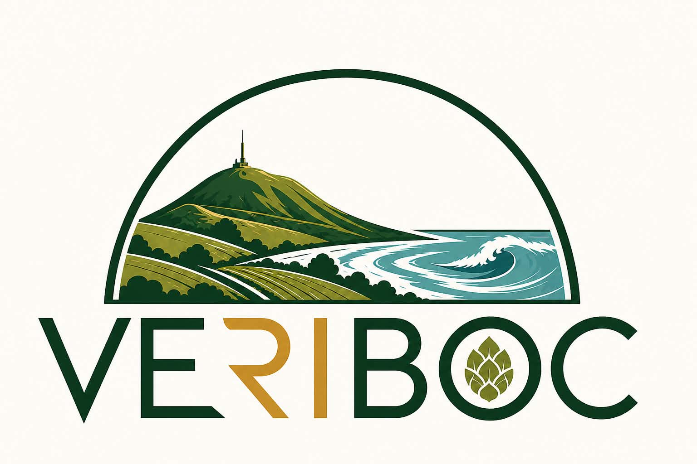
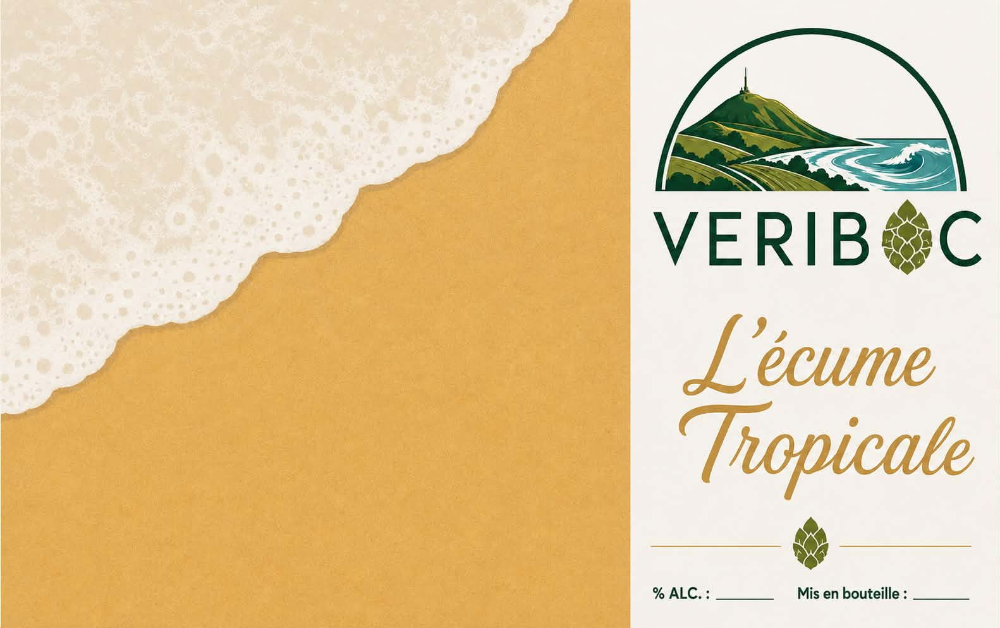
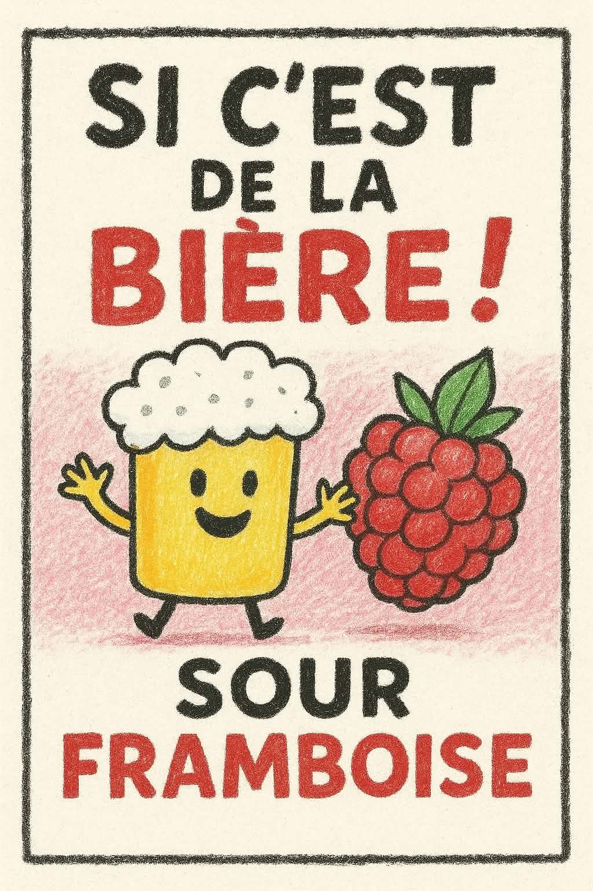
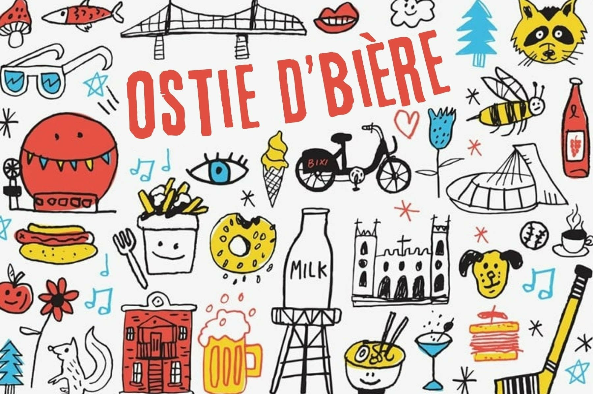

Brasserie artisanale entre mer et montagne
Née de l'alliance entre le bocage normand et le Bourbonnais, VERIBOC est une brasserie artisanale attachée à son terroir. Nous brassons des bières de caractère avec des ingrédients de qualité, notamment du houblon produit à la ferme.

Une bière aux notes exotiques et fruitées. 🌴 Houblons : Sabro 7.7°

De la framboise dans une bière ? Vous allez peut-être dire que ce n'est pas de la bière... Et pourtant, si ! Une bière gourmande qui plaît au plus grand nombre. 🍓 100 g/L de framboises 🍋 Citron vert 🥛 Lactose

📍 France
📧
Suivez prochainement VERIBOC sur les réseaux sociaux.